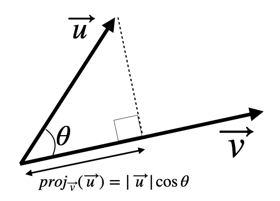
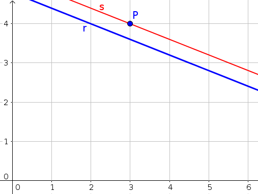

Les magnituds físiques es classifiquen en escalars i vectorials.
Una magnitud escalar és aquella que queda completament determinada amb un nombre i
les unitats corresponents. En canvi, una magnitud vectorial és aquella que,
a més d'un valor numèric i les seves unitats (mòdul), cal especificar-ne la direcció i el sentit.
| Magnituds vectorials |
Magnituds escalars |
| Temps |
Velocitat |
| Temperatura |
Acceleració |
| Volum |
Força |
| \(\cdots\) |
\(\cdots\) |
Un vector fix queda determinat per dos punts \(A\) origen i \(B\) extrem. El mòdul
és la llargària del vector o la distància entre \(A\) i \(B\). La direcció és la de la recta que
passa per \(A\) i \(B\). Cada direcció té dos sentits.
Presentació de Google Slides. Elaboració pròpia.
No et confonguis! Escalars i vectors.
En aquest lliurament, s'ha d'entendre el vocabulari que farem servir. En particular, cal tenir
clara la diferència entre els nombres reals, que anomenarem escalars, i els vectors.
D'una forma poc rigorosa, pots pensar que els vectors "porten fletxa" i els escalars no.
A l'estructura algebraica formada per escalars i vectors, juntament amb les
operacions que veurem a continuació, se l'anomena espai vectorial.
Un sistema de referència Cartesià està format per dos eixos, perpendiculars dos a dos,
que designam com \(OX\)
i \(OY\). Els dos eixos es tallen en un punt que anomenam origen \(O(0, 0)\).
Per localitzar un punt \(P\) en el pla donam dues coordenades \(P=(P_1, P_2)\) que corresponen a les projeccions
sobre els eixos \(OX\), \(OY\) respectivament.
Definim un vector fix d'origen en el punt \(A\) i extrem en el punt \(B\) com el segment
orientat
que va des d' \(A\) cap a \(B\). La fletxa del vector es dibuixa cap al punt extrem.
Les components del vector s'obtenen de restar els punts extrem menys origen
\[ \overrightarrow{AB}=B-A=(B_1-A_1, B_2-A_2) \tag{1}\]
Components d'un vector fix
Les components d'un vector indiquen quina distància s'avança en cada direcció mesurada des del seu
origen.
\(\overrightarrow{AB}=B-A=(1,-1)-(-2,3)=\) \((3,-4)\)
Aquest vector avança 3 unitats en direcció \(x\) i baixa \(4\) en direcció \(y\).
\(\overrightarrow{BA}=(-2,3)-(1,-1)=(-3,4)\)
Els dos vectors tenen sentit oposat i les seves components tenen signe diferent.
Si ens donen el vector \(\vec v = (2,2)\), del qual desconeixem l'origen, vol dir que el podem dibuixar amb l'origen que nosaltres
vulguem. Deim que es tracta d'un vector lliure. Generalment, resulta pràctic
representar-los en origen en el punt \(O(0,0)\).
Tots els vectors de la figura tenen igual direcció, mòdul i sentit. Les seves components també són idèntiques.
L'únic que canvia són els punts d'origen i extrem. Direm que tots aquests vectors són equipol·lents
entre si.
El vector que va des de l'origen de coordenades \(O=(0,0)\) al punt \(P=(P_1,P_2)\) s'anomena
vector de posició del punt \(P\) i té per components les mateixes coordenades del punt \(\vec{OP}=P-O=P=(P_1,P_2)\).
a) \(\overrightarrow{AB}\) i \(\overrightarrow{BC}\): Igual mòdul, direcció diferent
b) \(\overrightarrow{FE}\) i \(\overrightarrow{BC}\): Igual mòdul, direcció i sentit
c) \(\overrightarrow{BM}\) i \(\overrightarrow{DE}\): El mòdul del segon vector és el doble, igual direcció
i sentit
d) \(\overrightarrow{OS}\) i \(\overrightarrow{OE}\): Diferent mòdul i direcció
Components d'un vector
Una altra forma proporcionar un vector, que empraràs molt a física, consisteix en donar el seu mòdul i
l'angle que forma amb l'eix horitzontal. Per trigonometria, podem calcular fàcilment les seves components
\(\vec v = (|\vec v|\cos\alpha, |\vec v|\sin\alpha)\).
Les components del vector velocitat s'obtenen de projectar el mòdul sobre cadascun dels eixos de coordenades
\(OX\) i \(OY\).
\[\vec v = 10 \, (\cos 30^\circ, \sin 30^\circ)=10 \, \left(\frac{\sqrt{3}}{2}, \dfrac{1}{2}\right)=(5\sqrt{3}, 5) \text{ m/s} \tag{2}\]
Donats dos vectors lliures, per exemple \(\vec u = (-2,5)\) i \(\vec v =(3,1)\), es poden realitzar les següents
operacions; totes elles donen com a resultat un altre vector.
Producte d'un vector per un escalar
Multiplicar un nombre (escalar) \(k\) per un vector \(\vec u\) dona un vector que té la mateixa direcció que el
vector \(\vec u\) i mòdul \(k\) vegades més llarg. El sentit del vector serà el mateix si \(k \gt 0\) i sentit oposat si \(k
\lt 0\).
En components, es multiplica cada component per l'escalar. Per exemple: \(7\, (-2,5) = (-14, 35)\).
En la simulació següent modifica el valor de \(k\) arrossegant el control i observa quin efecte té sobre el vector \(k\vec u\). Quines
conclusions en treus?
Si prenem \(k=-1\), obtenim el vector oposat \(-\, (-2,5) = (2, -5)\)
Perquè dos vectors tinguin igual direcció, un a d'ésser un múltiple de l'altre \(\vec u=\lambda \vec v\). Direm que les
seves components són proporcionals
\[ \dfrac{u_1}{v_1} = \dfrac{u_2}{v_2} \tag{3}\]
Condició de vectors paral·lels
Fixeu-vos que multiplicar qualsevol vector pel nombre 0 dóna el vector zero: \(0\, (-2,5) = (0, 0)\)
Atenció. No confoneu el vector zero \(\vec 0 = (0,0)\) amb l'escalar \(0\).
Suma de vectors
Sabies que quan dues o més forces actuen sobre un cos, s'obté la força resultat mitjançant la suma
dels vectors? El cos romandrà en equilibri si la força resultant és nul·la (vector \(\vec 0\)).
En cas contrari, el cos es mourà amb una acceleració en la direcció de la força resultant.
La suma de vectors emprant components es fa sumant primera amb primera i segona amb segona components:
\((-2,5) + (3,1) = (-2+3, 5+1) = (1, 6)\)
Gràficament, la suma es pot construir dibuixant l'origen del segon vector a partir de l'extrem del primer.
Després s'uneix l'origen del primer
amb l'extrem del darrer vector. La figura mostra com es fa la mateixa suma d'abans gràficament. Aquesta tècnica es pot aplicar a un nombre arbitrari de vectors.
Si a un vector li sumam el seu oposat, el resultat de la suma és el vector zero. \((-2,5) + (2, -5) = (0,0)\),
o en general \(\vec u + (-\vec u) = \vec 0\).
Resta de vectors
La resta de dos vectors és equivalent a sumar-li l'oposat del segon vector: \(\vec u - \vec v = \vec u
+ (-\vec v)\).
Les components del vector resta s'obté restant component a component: \((-2,5) - (3,1) = (-2-3, 5-1) = (-5,4)\)
També es pot efectuar la resta gràficament utilitzant la mateixa tècnica anterior. Al primer vector si li ha
de sumar l'oposat del segon vector.
Combinació lineal de vectors
Una combinació lineal de dos vectors consisteix en sumar els vectors prèviament multiplicats per algun escalar.
Per exemple: \(5 \vec u - 2 \vec v = 5(-2,5) - 2 (3,1)= (-10, 25)-(6,2)=(-16, 23)\).
Combinació lineal de vectors
Canvia els coeficients \(\alpha\), \(\beta\) i analitza com canvia el resultat de la combinació (vector vermell).
Gràficament empram la regla del paral·lelogram
Amb components
\(\vec u +\vec v = (-2,1) + (3,2)=(1,3)\)
\(2\vec u + \vec v - 3\vec w = 2(4,-5) +(2,1) -3(0,3)=\)
\(=(8,-10) +(2,1)+(0,-9)= (10,-18)\)
Començarem donant dues definicions que ens serviran per entendre el concepte de base de vectors.
Direm que dos vectors són linealment dependents si tenen la mateixa direcció
(no cal que tenguin igual sentit).
Direm que dos vectors són linealment independents si tenen diferent direcció.
En l'apartat d'operacions hem vist com generar vectors dependents. Basta multiplicar un vector per
un nombre i obtenim un
vector dependent al primer. Per tant,
perquè dos vectors \(\vec u\,(u_1,u_2)\) i \(\vec v\,(v_1,v_2)\) siguin dependents, necessàriament un ha de ser un múltiple de l'altre.
És a dir, existirà un nombre \(\lambda\) tal que
\(\vec v = \lambda \vec u\). Si expressam aquesta relació en components, arribam a la conclusió
\[\dfrac{v_1}{u_1}=\dfrac{v_2}{u_2} \tag{4}\]
En altres paraules, dos vectors són paral·lels o dependents si les seves components són proporcionals.
Condició d'alineament de 3 punts
En el pla, tres punts \(A\), \(B\), \(C\) poden estar alineats o formar un triangle. La condició perquè estiguin alineats
és que els vectors \(\vec{AB}\) i \(\vec AC\) siguin linealment dependents.
Calculam els vectors \(\vec{AB}=B-A=(k,3)-(-1,2)=(k+1, 1)\) i \(\vec{AC}=C-A=(4,5)-(-1,2)=(5,3)\)
Aquests dos vectors han de ser linealment dependents; les seves components són proporcionals:
\[\dfrac{k+1}{5}=\dfrac{1}{3} \nonumber\]
Resolem l'equació i determinam que \(k=\frac{2}{3}\) perquè els punts estiguin alineats.
Bases i components
Definim els vectors de la base canònica o ortonormal com
base canònica o ortonormal \(\vec i = (1, 0)\), \(\vec j = (0,1)\).
Aquests vectors tenen mòdul 1 i formen un angle de \(90^\circ\).
En el mot ortonormal,
"orto" significa
que formen un angle de \(90^\circ\) i
"normal" que els vectors tenen mòdul 1.
D'aquesta forma qualsevol altre vector, per exemple \(\vec w = (2, 3)\), es pot expressar com una combinació lineal dels
vectors de la base \(\vec w = 2 \vec i + 3\vec j\); és
a dir \((2, 3)\) són les components del vector \(\vec w\) respecte de la base canònica.
Dues notacions equivalents
Un mateix vector es pot expressar en components \(\vec u =(u_1, u_2)\) o en
termes de la base canònica \(\vec u =u_1 \, \vec i + u_2\, \vec j\)
En general, perquè dos vectors \(\vec a\), \(\vec b\) formin una base del pla, s'ha de complir que tenguin diferent direcció (han de
ser linealment independents). En tal cas, qualsevol vector del pla es pot expressar com una combinació
lineal dels vectors de la base
\[\vec w = \alpha \vec a + \beta \vec b \tag{5}\]
Al parell de nombres \((\alpha,\beta)\) s'anomenen components del vector \(\vec w\) respecte de la base \(\mathcal{B}\{\vec a, \vec b\}\).
\newpage
Considera els vectors \(\vec a(2,0)\), \(\vec b(0,-1)\) de la figura. Atès que són linealment independents,
formen una base del pla.
Ara ens donen el vector que té de components respecte la base ortonormal \(\vec w=(4,3)=4\vec i + 3\vec j\).
Aquest mateix vector, es pot expressar com \(\vec w = 2 \vec a - 3 \vec b\) i, per tant, les components són
\((2,-3)\) respecte de la base \(\mathcal{B}\{\vec a, \vec b\}\).
No et confonguis! Tot i que un vector sempre és un mateix objecte, hem descobert que les seves components
depenen de la base que emprem per expressa-lo.
- \(\{\vec a (1,-1), \vec b (-1, 1)\}\): No formen una base perquè
són linealment dependents. Un vector és l'oposat de l'altre \(\vec b = - \vec a\).
- \(\{\vec a (1,-1), \vec b (1, 1)\}\): Formen una base perquè són
linealment independents. Les components no són proporcionals \(\dfrac{1}{1}\neq \dfrac{1}{-1}\).
- \(\{\vec a (8,-6), \vec b (-12, 9)\}\): Aquests vectors no formen base perquè són
linealment dependents. Les components són proporcionals \(\dfrac{-12}{8} = \dfrac{9}{-6}\).
\newpage
Definició
Anomenam producte escalar de dos vectors \(\vec u\) i \(\vec v\) al resultat de la següent operació
\[
\vec u \cdot \vec v = |\vec u| \, |\vec v| \, \cos \alpha \label{eq:pescalardef}
\tag{6}\]
Definició de producte escalar
és a dir, el producte dels seus mòduls multiplicat pel cosinus de l'angle que formen.
El resultat del producte escalar és un nombre (un escalar). No doneu mai com a resposta un
vector.
Interpretació geomètrica
El producte escalar \(\vec u \cdot \vec v\) es pot interpretar com la projecció (o l'ombra) del
vector \(\vec u\) sobre la direcció donada pel vector \(\vec v\)

De la figura anterior s'obté la projecció per aplicació de la trigonometria
en el triangle rectangle. Podem definir la projecció del vector \(\vec u\) sobre la direcció del vector \(\vec v\)
com
\[proj_{\vec v} (\vec u) = |\vec u|\cos \theta = \dfrac{\vec u \cdot \vec v}{|\vec v|} \tag{7}\]
Propietats del producte escalar
De la definició (6) en deduïm les següents propietats
- El producte escalar és commutatiu: \(\vec u \cdot \vec v = \vec v \cdot \vec u\)
- El producte escalar és distributiu: \(\vec u \cdot (\vec v + \vec w) = \vec u \cdot \vec v + \vec u \cdot \vec w\)
- El producte escalar és associatiu: \(\lambda \, (\vec u \cdot \vec v ) = (\lambda \, \vec u) \cdot \vec v = \vec u \cdot (\lambda \, \vec v)\)
- El producte escalar té signe
- Si \(\alpha\) és un angle agut, \(\cos \alpha \gt 0\) \(\Rightarrow\) \(\vec u \cdot \vec v \gt 0\)
- Si \(\alpha\) és un angle obtús, \(\cos \alpha \lt 0\) \(\Rightarrow\) \(\vec u \cdot \vec v \lt 0\)
- Si \(\alpha\) és un angle recte ( \(90^\circ\)), \(\cos \alpha = 0\) \(\Rightarrow\) \(\vec u \cdot \vec v = 0\)
De la darrera propietat obtenim un resultat molt important que utilitzarem en la resta dels lliuraments.
Dos vectors són perpendiculars si i només si el seu producte escalar és igual a zero \(\vec u \cdot \vec v = 0\).
Condició vectors perpendiculars
Utilitzam la definició de producte escalar i recordam que els vectors \(\vec i\), \(\vec j\) són ortonormals (mòdul 1 i formen un angle de \(90^\circ\))
\[ \vec i \cdot \vec i = |\vec i|\,|\vec i|\cos 0^\circ = 1\nonumber\]
\[ \vec i \cdot \vec j = |\vec i|\,|\vec j|\cos 90^\circ = 0\nonumber\]
\[ \vec j \cdot \vec j = |\vec j|\,|\vec j|\cos 0^\circ = 1\nonumber\]
Producte escalar en components
Si ens donem dos vectors expressats en components respecte de la base
canònica \(\vec u =u_1 \, \vec i + u_2\, \vec j\) i \(\vec v =v_1 \, \vec i + v_2\, \vec j\), el producte escalar en components s'obté de
\[
\vec u \cdot \vec v = u_1 \, v_1 + u_2 \, v_2 \label{eq:pescalarcomp}
\tag{8}\]
Producte escalar en components
es llegeix com primera component per primera més segona component per segona.
Demostració:
\(\vec u \cdot \vec v = (u_1 \, \vec i + u_2\, \vec j) \cdot (v_1 \, \vec i + v_2\, \vec j)=\)
Aplicam la propietat distributiva:
\( = u_1 \, v_1 \stackrel{=1}{\vec i \cdot \vec i} + u_1\, v_2\, \stackrel{=0}{\cancel{\vec i \cdot \vec j}} +u_2 \, v_1 \stackrel{=0}{\cancel{\vec i \cdot \vec j}} + u_2\, v_2\, \stackrel{=1}{\vec j \cdot \vec j} =\)
substituint els valors dels productes escalars dels vectors \(\vec i\), \(\vec j\) s'obté el resultat final
\( = u_1 \, v_1 + u_2\, v_2\)
La condició que dos vectors siguin perpendiculars és que el seu
producte escalar sigui igual a zero
a) \((3,2)\cdot (1,3) =3+6=9\) no són ortogonals.
b) \((5,-4)\cdot (4,5) =20-20=0\) són ortogonals.
c) \((1,2)\cdot (0,0) = 0\) no té sentit demanar-se per l'angle ja que el segon vector és el vector nul.
d) \((1,2)\cdot (-2,3) =-2+6=4\) no són ortogonals.
La condició que dos vectors siguin perpendiculars és que el seu
producte escalar sigui igual a zero.
\((18,-6)\cdot (k,4) =18 k -24=0\) \(\Rightarrow\) \(k = \dfrac{24}{18} = \dfrac{4}{3}\).
a) \((3\vec u + 2\vec v) \cdot \vec w \)=
\(\left(3(2,3) + 2(-3,1)\right) \cdot (5,2) \)=
\(\left((6,9) + (-6,2)\right) \cdot (5,2) \)=
\(\left(0, 11\right) \cdot (5,2) = 22\) és un escalar
b) \(\vec u\cdot \vec w - \vec v \cdot \vec w \)=
\((2,3)\cdot (5,2) - (-3,1) \cdot (5,2)\) =
\( 10 +6 - (-15+2) = 16 - (-13) = 29\) és un escalar
c) \((\vec u \cdot \vec v)\, \vec w \)
= \( \left( (2,3) \cdot (-3,1) \right)\, (5,2)\) =
\( -3\, (5,2) = (-15, -6)\) és un vector
d) \(\vec u \,(\vec v \cdot \vec v) \) =
\((2,3) \, ((-3,1) \cdot (-3,1))\) =
\( (2,3) \, 10 = (20, 30)\) es tracta d'un vector.
Com trobar vectors perpendiculars a un donat?
Donat un vector \(\vec v = (v_1, v_2)\) existeixen infinits vectors perpendiculars a ell.
Un d'aquests vectors en concret es troba girant l'ordre de les components i canviant un dels signes, per exemple
\(\vec v_\perp = (-v_2, v_1)\).
La resta de vectors seran múltiples d'aquest; \(\lambda (-v_2, v_1)\).
a) \((\vec u + \vec v)\cdot \vec w =\) \(((2,1) + (1,-2)) \cdot (-5,-2)=(3,-1)\cdot (-5,-2)\) \(=-15+2=-13\).
El resultat és un escalar.
b) \((\vec u \cdot \vec v) \, \vec w = (\vec (2,1) \cdot (1,-2)) \, (-5,-2)= 0 (-5,-2)= (0,0)\).
El resultat és el vector nul.
c) \(\vec u + \vec v \cdot \vec w\). Aquesta operació no té sentit. No es pot sumar a un vector un escalar.
Dos vectors són perpendiculars si el seu producte escalar és igual a zero:
\(\vec u \cdot \vec v = (6,m)\cdot (2,3)= 12 + 3m = 0\)
Si resolem l'equació trobam que \(m=-4\).
Mòdul d'un vector
El mòdul d'un vector de components \(\vec v (v_1, v_2)\) s'obté de
\[ |\vec v| = \sqrt{v_1^2 + v_2^2 } \label{eq:modul} \tag{9}\]
Mòdul d'un vector
A partir de la definició de producte escalar (6),
es compleix que \(|\vec v|=\sqrt{\vec v \cdot \vec v}\)
Un vector és unitari si té mòdul 1. Per aconseguir que un vector sigui
unitari basta dividir el vector entre el seu mòdul. Ho indicam de la següent forma
\(\hat{\vec u}=\dfrac{\vec u}{|\vec u|}\).
Vector unitari. Normalitzar un vector
Angle entre dos vectors
L'angle que formen dos vectors amb components \(\vec u (u_1, u_2)\) i \(\vec v (v_1, v_2)\)
s'obté a partir de les fórmules (6) i (8)
\[ \alpha = \arccos \dfrac{\vec u \cdot \vec v}{|\vec u|\, |\vec v|} =
\arccos \dfrac{u_1 v_1 + u_2 v_2}{\sqrt{u_1^2 + u_2^2} \sqrt{v_1^2 + v_2^2}}
\label{eq:angle} \tag{10}\]
Angle entre dos vectors
Dos vectors paral·lels que tenen igual sentit formen un angle de \(0^\circ\), mentre que
si tenen sentit oposat formen un angle de \(180^\circ\).
Un possible vector perpendicular és \((3,4)\) perquè \((3,4)\cdot (4,-3)=12-12=0\).
Calculem el seu mòdul \(|(3,4)| = \sqrt{3^2+4^2}=\sqrt{25}=5\).
Per aconseguir un vector
unitari, dividim el vector entre el seu mòdul \(\dfrac{1}{5}(3,4)=(\frac{3}{5}, \frac{4}{5})\).
L'altra resposta és l'oposat d'aquest vector \((-\frac{3}{5}, -\frac{4}{5})\).
Calculam el producte escalar \(\vec u \cdot \vec v = (2,5)\cdot (4,-3)=8-15=-7\)
Calculam els seus mòduls \(|\vec u|= \sqrt{2^2+5^2}= \sqrt{29}\),
\(|\vec v|= \sqrt{4^2+(-3)^2}= \sqrt{25}=5\)
Calculam l'angle
\[
\alpha = \arccos \dfrac{-7}{5\sqrt{29}} = \arccos -0,259 \approx 105,1^\circ \nonumber
\]
\(|\vec a| = \sqrt{6^2 + (-8)^2}=\sqrt{100}=10\)
El cosinus de l'angle és igual a \(\cos \alpha = \dfrac{\vec a \cdot \vec b}{|\vec a| \,|\vec b|}\)
\(\vec a \cdot \vec b=(6, -8)\cdot (1,1)=6-8 = -2\)
\(|\vec a| = \sqrt{6^2 + (-8)^2}=\sqrt{100}=10\)
\(|\vec b| = \sqrt{1^2+1^2}=\sqrt{2}\)
Llavors l'angle serà \(\alpha = \arccos \dfrac{-2}{10\sqrt{2}} = 98.13^\circ\)
Microtasca d'aprenentatge BAT_MAT1 6.1
Et recomano que intentis realitzar aquesta tasca abans de seguir amb els continguts del lliurament.
Fins ara hem après a manejar vectors. En la propera secció veurem la seva aplicació a l'estudi de la recta en el pla.
Existeixen dues formes (equivalents) d'expressar una recta:
- Per dos punts \(A\) i \(B\) hi passa una única recta
- Proporcionat un punt \(A\) i un vector director \(\vec d\)
El primer cas es redueix al segon perquè sempre podem prendre com a vector
\(\vec d = \overrightarrow{AB}\). Aquest vector es coneix com vector director de la recta.
En aquest apartat aprendrem a expressar l'equació de la recta en diferents formes equivalents
entre si.
Partirem de l'equació vectorial de la qual es poden deduir totes les altres.
Equació vectorial
Volem trobar l'equació de la recta que passa pel punt \(P\) i té com a vector director \(\vec d\).
Considerem un punt qualsevol \(X\) que es troba damunt la recta. S'ha de complir que el vector
\(\overrightarrow{PX}\) ha d'ésser un múltiple del vector director \(\overrightarrow{PX} = \lambda \vec d\).
De la suma gràfica de vectors de la figura, es compleix que \(\vec{OX} = \vec{OP} + \lambda \vec d\). Aquesta
equació es coneix com l'equació vectorial de la recta.
Si expressam els vectors en components \(P=(P_1,P_2)\) i \(\vec d(d_1, d_2)\) trobam
Equació vectorial de la recta:
\((x,y) = (P_1, P_2) + \lambda (d_1,d_2)\)
Equació vectorial de la recta
Obtenim punts donant valors al paràmetre \(\lambda\).
Calculam el vector director de la recta
\(\vec d = \overrightarrow{AB} = B - A = (1,4)-(3,1)=(-2,3)\)
i triam un punt, per exemple, \(A\).
\((x,y) = (3, 1) + \lambda (-2, 3)\)
Podem trobar més punts donant valors al paràmetre: Per a \(\lambda=1\) trobam
el punt \((x,y)=(1,4)\), \(\lambda=-1\) tenim \((x,y)=(5,-2)\) i \(\lambda=3\)
\((x,y)=(-3,10)\), etc.
Equacions paramètriques
De l'equació vectorial igualam les components \(x\) i \(y\) i obtenim
Equacions paramètriques:
\(\left\{ \begin{array}{l} x = P_1 + \lambda d_1 \\ y = P_2 + \lambda d_2 \end{array} \right.\)
Equacions paramètriques de la recta
Obtenim punts donant valors al paràmetre \(\lambda\).
Cal notar que les components del vector director són els coeficients
que acompanyen el paràmetre, mentre que els coeficients lliures
de paràmetre són les coordenades del punt.
Així doncs, la recta \(\left\{ \begin{array}{l} x = 2\lambda \\ y = 3 - \lambda \end{array} \right.\)
tindrà com a punt \(P=(0,3)\) i
vector director \(\vec d (2,-1)\).
Partim de l'equació vectorial obtinguda a l'exemple anterior
\((x,y) = (3, 1) + \lambda (-2, 3)\) operam el membre de la dreta
\((x,y) = (3-2\lambda, 1+3\lambda)\) i igualam component a component
\(\left\{ \begin{array}{l} x = 3 - 2\lambda \\
y = 1 + 3 \lambda \end{array} \right.\)
Igual que abans donant punts a \(\lambda\) trobarem més punts de la recta.
Equació contínua
L'equació contínua s'obté d'eliminar el paràmetre \(\lambda\) de les equacions paramètriques.
Forma de l'equació contínua
\(\dfrac{x - P_1}{d_1} = \dfrac{y-P_2}{d_2}\)
Equació contínua de la recta
Noteu que en forma contínua, les components del vector director apareixen en els
denominadors i el punt en els numeradors canviat de signe.
Aïllam \(\lambda\) de cada equació. \(\lambda = \dfrac{x-3}{-2}\) i
\(\lambda = \dfrac{y-1}{3}\)
Si igualam les expressions de \(\lambda\) obtenim l'equació contínua
\(\dfrac{x-3}{-2} = \dfrac{y-1}{3}\)
Equació punt-pendent
Com el mateix nom indica, l'equació punt-pendent s'obté a partir d'un punt de la recta i el
seu pendent. El pendent de la recta informa de la seva inclinació i està determinat pel vector director
\(m = \dfrac{d_2}{d_1}\)relació entre vector i pendent.
L'equació punt-pendent té la forma
\[
y-P_1 = m \cdot (x - P_2) \label{eq:puntpendent}
\tag{11}\]
Equació punt-pendent de la recta
L'equació punt-pendent es pot obtenir a partir de l'equació contínua i passant un denominador
multiplicant a l'altre membre:
\(\dfrac{x-3}{-2} = \dfrac{y-1}{3}\) \(\Rightarrow\) \(y-1 = -\frac{3}{2}(x-3)\) de la qual
el pendent és \(m=-\dfrac{3}{2}\) i el punt \(P=(3,1)\).
Equació implícita o general
L'equació general té la forma \(Ax+By+C=0\) on els coeficients \(A, B\) són les
components del vector normal \(\vec n =(A, B)\), és a dir, d'un vector perpendicular a la recta.
Si volguéssim un vector director hauríem de prendre \(\vec d =(-B, A)\)
Equació general de la recta
L'equació general s'obté de la contínua efectuant els productes en creu i passant tots
els termes al membre de l'esquerre.
Per trobar més punts, cal donar valors a una de les variables, per exemple \(x\), i aïllar l'altra.
Multiplicam en creu les fraccions \(3 (x-3) = -2(y-1)\) \(\Rightarrow\)
\(3x-9 = -2y+2\) \(\Rightarrow\) \(3x+2y-11=0\).
Podem trobar més punts donant valors a \(x\) i aïllant la \(y\). Per exemple
si \(x=1\), \(y=4\). També es pot fer a l'inrevés, donam un valor a \(y=0\) i
aïllam la \(x=\dfrac{11}{3}\).
Equació explícita
L'equació explícita de la recta s'obté aïllant la variable \(y\) i
té la forma
\[ y =m x + n \label{eq:implicit} \tag{12}\]
Equació explícita de la recta
on \(m\) s'anomena el pendent i \(n\) l'ordenada a l'origen.
Com hem dit, el pendent s'obté de \(m = \dfrac{d_2}{d_1}\) i \(n\) indica el punt de tall de
la recta amb l'eix OY.
Ens donen l'equació en forma explícita de la qual, per comparació amb (12),
deduïm \(m=\dfrac{1}{3}\), llavors un vector director és \(\vec d (3, 1)\). Si donam el valor
\(x=0\) trobam \(y=-5\), per tant un punt de la recta és \(P=(0,-5)\).
Les altres formes s'obtenen substituint les dades dins les seves equacions característiques
- Vectorial: \((x,y)=(0,-5) + t (3, 1)\)
- Paramètriques: \(\left\{ \begin{array}{l} x = 3 t \\
y = -5 + t \end{array} \right.\)
- Contínua: \(\dfrac{x-0}{3}=\dfrac{y+5}{1}\)
- Punt-pendent: \(y+5 = \dfrac{1}{3}(x+0)\)
- General: \(-x+3y+15=0\)
- Equació vectorial: \((x,y)=(2,-1) + t\, (3,4)\)
- Equacions paramètriques: \(\left\{\begin{array}{l} x= 2+3t \\ y=-1+4t \end{array}\right.\)
- Equació contínua: \(\dfrac{x-2}{3} = \dfrac{y+1}{4}\)
- Equació punt-pendent: \(y+1 = \dfrac{4}{3}(x-2)\)
- Equació general: \(4x-3y-11=0\)
- Equació explícita: \(y=\frac{4}{3}x-\frac{11}{3}\)
a) Aïllam \(y\) i trobam l'equació explícita: \(y=2x+7\). Donam valors a \(x\) i calculam
\(y\). Obtenim, per exemple, els punts \(A=(0,7)\), \(B=(-1,5)\), \(C=(1,9)\), etc.
b) Un vector director es pot obtenir de \(\vec d = \vec{AB} = B-A=(-1,5) - (0, 7) = (-1,-2)\) o també serveix
\(\vec d (1,2)\).
c) Agafant un punt (per exemple \(A=(0,7)\)) i el vector \(\vec d (1,2)\), podem escriure les equacions paramètriques directament:
\(\left\{\begin{array}{l} x= 0+1t \\ y=7+2t \end{array}\right.\)
Les rectes horitzontals o constants tenen com a vector director \(\vec d(1, 0)\) (o múltiples d'ell)
i la seva equació és de la forma \(y=k\).
Recta horitzontal
En canvi, les rectes verticals representen parets que tenen com a vector director \(\vec d(0, 1)\) (o múltiples)
i la seva equació és de la forma \(x=k\).
Recta vertical
Indentificam la recta horitzontal \(r:\, y=4\) i les dues rectes verticals \(t:\, x=4\) i \(q:\, x=8\).
Queda per determinar la recta que passa pels punts \(G=(0,6)\) i \(E=(7,8)\). El vector director és
\(\vec{GE}=E-G=(7,2)\) i el pendent \(m=\frac{2}{7}\). L'ordenada a l'origen és precisament el punt \(G\), i
per tant, \(n=6\). En definitiva, l'equació explícita és \(s:\, y=\frac{2}{7}x+6\).
Pràctica de conversió entre tipus d'equacions
Dues rectes en el pla poden estar situades una respecte l'altra de 3 formes diferents:
- es tallen a un punt (secants),
- són
paral·leles o,
- són coincidents (són la mateixa recta).
La posició relativa es pot determinar mitjançant diverses tècniques i
la forma més ràpida dependrà
de com venguin donades les equacions de les rectes.
Comencem analitzant el cas a partir de punts i
vectors directors.
A partir de punts i vectors
Si els vectors directors de les rectes són independents, aleshores les rectes són secants.
Si els vectors directors de les rectes són dependents, aleshores cal agafar un punt \(R\)
de la recta \(r\) fer el següent:
- Si el punt \(R\) no pertany a la recta \(s\), aleshores les rectes són paral·leles.
- Si el punt \(R\) també pertany a la recta \(s\), aleshores són coincidents.
| Secants | Paral·leles | Coincidents |
|---|
|
|
|
| \(\vec d_r, \vec d_s\) independents |
\(\vec d_r, \vec d_s\) dependents |
\(\vec d_r, \vec d_s\) dependents |
|
\(R\) no pertany a \(s\) |
\(R\) pertany a \(s\) |
| Secants | Paral·leles | Coincidents |
|---|
|
|
|
| \(\vec d_r, \vec d_s\) independents | \(\vec d_r, \vec d_s\) dependents | \(\vec d_r, \vec d_s\) dependents |
| \(R\) no pertany a \(s\) | \(R\) pertany a \(s\) |
Taula: Posició relativa de dues rectes al pla.
A partir de les equacions generals
L'altre forma de determinar la posició relativa és útil si es té les equacions
en forma general. En aquest cas, cada recta tindrà una equació de la forma
\[\begin{array}{l}r:\, Ax+By+C=0 \\ s:\, A'x+B'y+C'=0\end{array} \tag{13}\]
La posició es fa comprovant les relacions entre coeficients
- Si \(\dfrac{A}{A'}\neq \dfrac{B}{B'}\): Les rectes són secants.
- Si \(\dfrac{A}{A'} = \dfrac{B}{B'} \neq \dfrac{C}{C'} \): Les rectes són paral·leles.
- Si \(\dfrac{A}{A'} = \dfrac{B}{B'} = \dfrac{C}{C'} \): Les rectes són coincidents.
A partir de les equacions explícites
Finalment, també es pot raonar en termes del pendent i l'ordenada a l'origen de l'equació explícita \(y=mx+n\).
Si dues rectes tenen diferent pendent \(m\), per força són secants. Si tenen igual pendent però diferent
ordenada a l'origen \(n\) seran paral·leles. En altre cas, seran coincidents.
- a) \(r:\, y=3x-2\) i \(s:\, y=3x+1\) Són paral·leles perquè les equacions explícites tenen igual pendent però diferent ordenada a l'origen.
- b) \(r:\, (x,y)=(0,1)+t(-6,2)\) i \(s:\, \dfrac{x-6}{3}=\dfrac{y+1}{-1}\) Són coincidents (la mateixa recta). Fixeu-vos que els vectors directors
\((-6,2)\) i \((3,-1)\) són proporcionals. A més el punt \(R=(0,1)\) també pertany a la recta \(s\).
- c) \(r:\, 3x-2y+5=0\) i \(s:\, -6x+4y+10=0\) Es tracta de dues rectes paral·leles perquè es compleix que \(\dfrac{3}{-6}=\dfrac{-2}{4}\neq \dfrac{5}{10}\)
- d) \(r:\, 3x-2y+5=0\) i \(s:\, 2x+3y-5=0\) Són dues rectes secants perquè tenen diferent pendent. Es compleix que \(\dfrac{3}{-2}\neq \dfrac{-2}{3}\)
Dues rectes són paral·leles o perpendiculars si ho són els seus vectors
directors. Recordem quines són aquestes condicions:
Donats dos vectors \(\vec u = (u_1, u_2)\), \(\vec v (v_1,v_2)\)
Són paral·lels si les seves components són proporcionals \(\dfrac{u_2}{u_1}=\dfrac{v_2}{v_1}\)
que és equivalent a dir que tenen igual pendent.
-
Són perpendiculars si el seu producte escalar és zero \(\vec u \cdot \vec v =0\).
Un possible vector perpendicular a un donat \((u_1, u_2)\) és \((-u_2, u_1)\).
Recta paral·lela a una donada
La recta que ens demanen ha d'ésser paral·lela a la recta \(r\) i per tant ha de tenir
el mateix vector director. El vector director és \(\vec d = (-5, 2)\).
La recta que ens demanen en forma paramètrica és
\(\left\{ \begin{array}{l} x = 3 - 5\lambda \\
y = 4 + 2 \lambda \end{array} \right.\).

Recta perpendicular a una donada
La recta que ens donen està en forma general i el vector normal \(\vec n_r = (5,-2)\) ja és
un vector perpendicular a la recta. Aquest vector és el vector director de la recta
que ens demanen \(\vec d_s = \vec n_r = (5, -2)\)
La recta que ens demanen en forma contínua és
\(\dfrac{x+3}{5} = \dfrac{y-2}{-2}\).

La recta que ens donen està en forma punt-pendent de la qual en deduïm el pendent
\(m=\dfrac{3}{2}\) i d'aquí el vector director \(\vec d (2,3)\). Un vector perpendicular a aquest
és \(\vec n (-3, 2)\) i serà el vector director de la recta que ens demanen.
A més, la recta que ens demanen ha de passar pel punt de tall \(P=(0,4)\). La seva equació vectorial és
\((x,y) = (0,4) + t (-3, 2)\).
La recta \(r\) ve donada en forma explícita. Per trobar el seu vector director, primer
calcularem dos punts donant valors a \(x\) i cercant què val \(y\). Trobam \(A=(0,1)\) i
\(B=(1,-1)\). El vector director és \(\vec d = \vec{AB} = B-A=(1,-1)-(0,1)=(1,-2)\).
La recta paral·lela a \(r\), anomenada \(s\), tindrà el mateix vector director
\(\vec d (1,-2)\) i passarà pel punt \(P(2, 1)\). Amb aquestes dues dades ja podem escriure
l'equació contínua de la recta que ens demanen. Recordeu que el punt va canviat de signe al numeradors,
i les components del vector director al denominador
\(s: \, \dfrac{x-2}{1} = \dfrac{y-1}{-2}\)
A continuació es mostra la situació gràfica
De l'equació contínua de la recta \(r\) podem deduir fàcilment el seu vector director (mirant el denominadors)
\(\vec d_r = (4,-3)\). És fàcil també trobar un vector perpendicular a aquest (giram les components i canviam un signe)
\(\vec n_r = (3, 4)\). De fet, es comprova que són perpendiculars ja que \(\vec d_r \cdot \vec n_r = 0\).
La recta que ens demanen tindrà com a vector director \(\vec d_s = \vec n_r = (3, 4)\) i passarà per \(P=(1, -1)\).
Començarem escrivint l'equació contínua
\[t: \dfrac{x-1}{3}=\dfrac{y+1}{4} \nonumber\]
Multiplicam en creu l'equació i eliminam els parèntesis:
\[t: 4(x-1)=3(y+1) \rightarrow 4x-3y-7=0 \nonumber\]
A continuació es mostra la situació gràfica
Necessites practicar més?